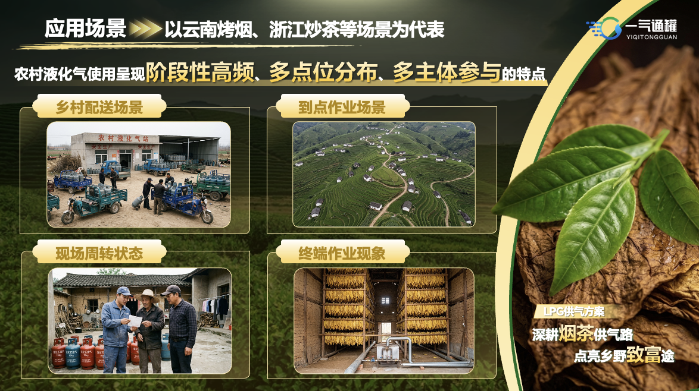
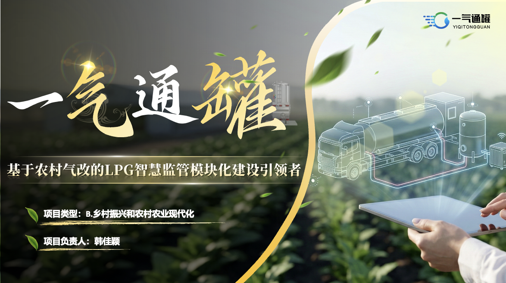
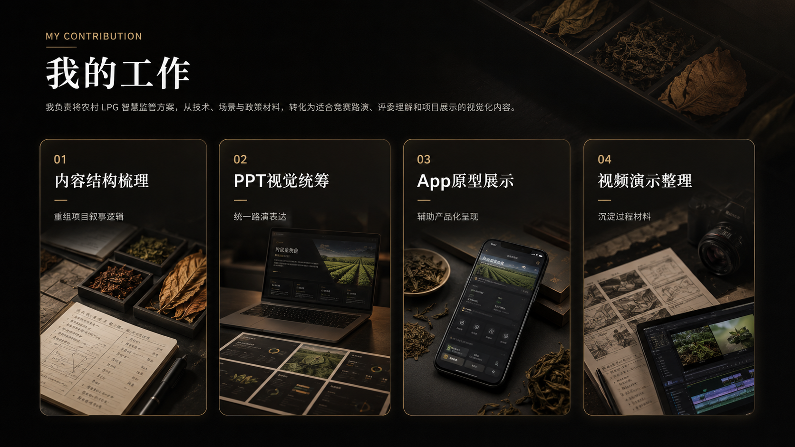
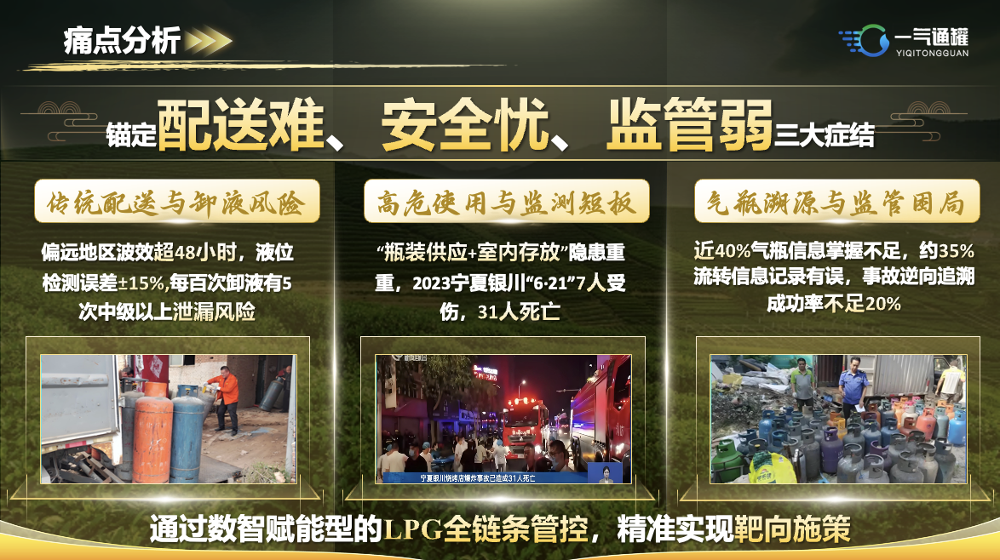
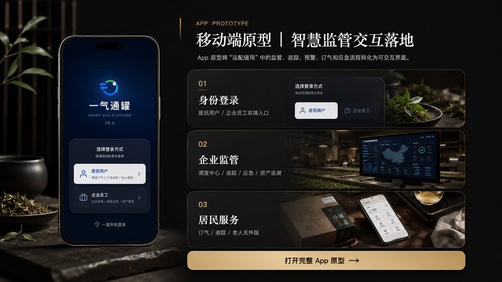
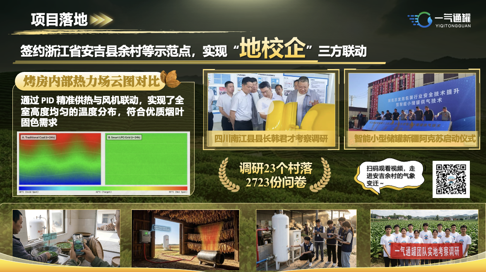
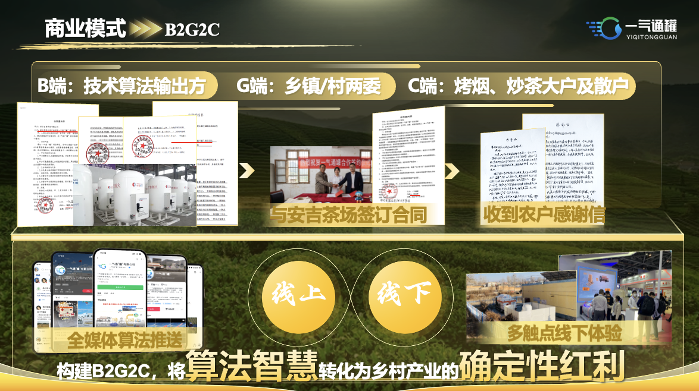
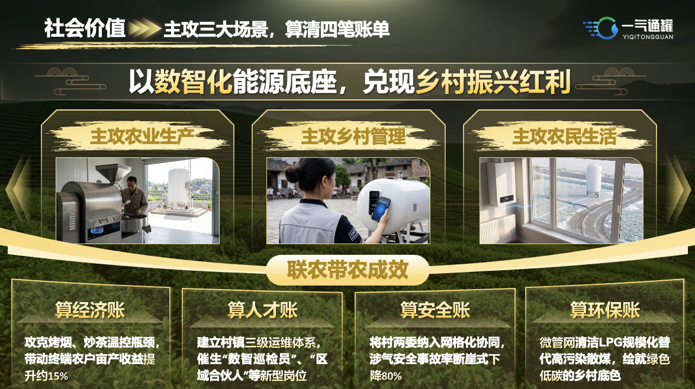
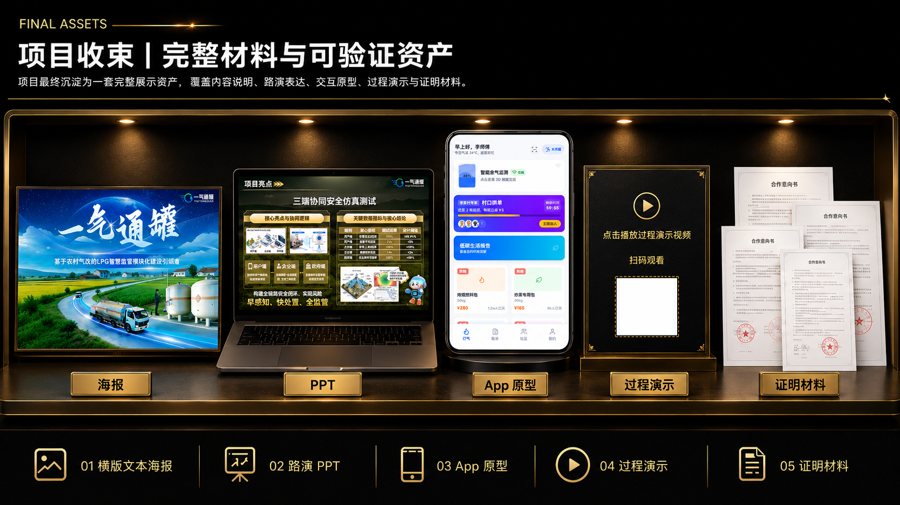

01
场景切入
应用场景
云南烤烟、浙江炒茶等农村 LPG 高频作业场景，体现项目切入的真实业务环境。

应用场景图片位assets/pitch-scene.pngYIQI TONGGUAN CASE REVIEW
基于农村气改的 LPG 智慧监管模块化建设引领者
围绕农村液化气配送、卸液、储存与终端使用场景，构建“运-配-储-用”全链路智慧监管方案。

一气通罐｜PPT 封面待替换assets/hero-cover.png
我的工作图片位assets/work-overview.pngPROBLEM INSIGHT
围绕农村 LPG 使用中的配送、到点作业、现场周转与终端监管问题，识别项目切入点。

项目痛点图片位assets/pain-point.pngCore System
通过智能硬件、数字平台与运营模式协同，构建从气源运输到终端使用的智慧监管闭环。

移动端原型图片位assets/app-prototype-overview.pngVALUE PROOF
补充展示项目从真实场景、落地路径到商业模式与社会价值的表达。
云南烤烟、浙江炒茶等农村 LPG 高频作业场景，体现项目切入的真实业务环境。

应用场景图片位assets/pitch-scene.png围绕合作对象、试点条件与实施路径，说明项目具备实际落地基础。

项目落地图片位assets/pitch-landing.png通过 B2G2C、技术服务与平台协同，形成可持续运营路径。

商业模式图片位assets/pitch-business.png围绕安全监管、乡村共富与数字治理，呈现项目综合价值。

社会价值图片位assets/pitch-social-value.png
完整材料图片位assets/final-assets-overview.png